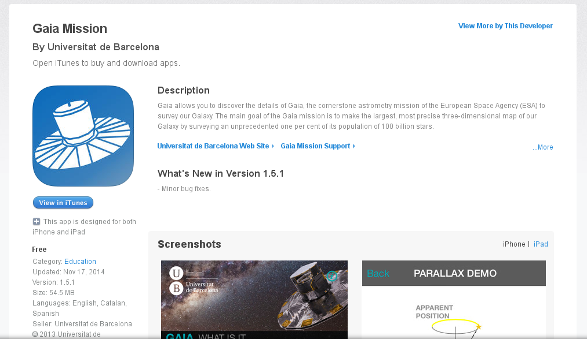

Estimación de parámetros
físicos en estrellas de baja masa
bajo el marco de la misión espacial GAIA
A. Berihuete, L. M. Sarro, A. Suárez, D. Barrado, C. Carrión, M. Sánchez
Universidad de Cádiz
Universidad Nacional de Educación a Distancia
Centro de Astrobiología
Esquema de la presentación
- Contexto: ¿qué es la misión espacial GAIA?
- Los datos: ¿qué son las estrellas de baja masa?
- Estimación parámetrica. Principales resultados.
- Trabajo actual y futuro.
La misión espacial GAIA

Hiparco de Nicea
(The High Precision Parallax Collecting Satellite)
La misión espacial GAIA
Reto tecnológico
106 CCDs con 8 millones de pixels cada uno.
Transmitirá, durante 5 años, 50 Gb diarios. Al final de la misión el archivo de datos excederá el Petabyte.
Reto científico
Se registrarán un total de 70 mil millones de observaciones, cada una de ellas compuesta a su vez de varios conjuntos de medidas.
La astrometría será la mejor conseguida hasta ahora.
La misión espacial GAIA
El reto: un censo de mil millones de estrellas

La Astroestadística se ha convertido en eslabón fundamental para el análisis y contraste de modelos en las grandes bases de la Astronomía actual.
La misión espacial GAIA
Consorcio para el procesado de datos (DPAC)


La misión espacial GAIA
CU8 está encargada de la determinación de parámetros astrofísicos. Dichos parámetros se determinan a partir de varios módulos en un pipeline llamado Apsis

El módulo Apsis incluye una clasificación inicial de los objetos en grandes categorías, e integra módulos para estimar parámetros astrofísicos dentro de cada una de esas categorías.
El módulo UCD
estrellas enanas ultra frías

Contexto: GAIA contendrá un vasto número de objetos, incluyendo estrellas enanas ultrafrías (temperatura por debajo de 2500 K)
Objetivo: Abordar la precisión de las estimaciones de la temperatura y gravedad obtenidas a partir de modelos y observaciones actuales.
El módulo UCD
estrellas enanas ultra frías

Fuente Sarro et al.
Datos para el módulo UCD
¿qué vemos realmente?

Fuente Sarro et al.
Bibliotecas de modelos estelares y los espectros sintéticos asociados ofrecen un conjunto homogéneo que cubren uniformemente el espacio de parámetros.
Datos para el módulo UCD
¿qué vemos realmente?
Fuente Sarro et al.
Estas bibliotecas parametrizan los modelos con magnitudes físicas (temperatura efectiva, gravedades, y metalicidades)
Son imperfectas, ya que no pueden reproducir exactamente todas las características de un espectro real UCD.
Datos para el módulo UCD
¿qué vemos realmente?
Fuente Sarro et al.
Los tipos espectrales pueden inferirse sin el uso de modelos sintéticos, pero el camino de espectro a los parámetros físicos necesitan de éstas para su correcta interpretación.
Dado el espectro de baja resolución de GAIA, la mayoría de las características utilizadas para decidir el tipo espectral permanecen no resueltas o innobservadas, i.e., cuidado con las interpretaciones.
Datos para el módulo UCD
¿qué vemos realmente?
Fuente Sarro et al.
Los modelos sintéticos definen la relación entre los espcetros observados por GAIA y los parámetros que queremos estimar $T_{eff}$ y $\log (g)$, temperatura y gravedad. Esta relación es capturada por un modelo de regresión mediante una red neuronal artificial (perceptron multicapa).
Datos para el módulo UCD
¿qué vemos realmente?
Fuente Sarro et al.
El conjunto de entrenamiento se construye utilizando las bibliotecas sintéticas ($T_{eff} < 4000K$) y transformando el espectro sintético mediante el Gaia Object Generator (GOG).
Estimación paramétrica
- Bibliotecas sintéticas de espectros vistas por GAIA: modelos.
- Bibliotecas sintéticas y espectros obtenidos en tierra vistas por GAIA: observaciones.

Fuente Sarro et al.
Estimación paramétrica
Recordemos objetivo : Abordar la precisión de las estimaciones de la temperatura y gravedad obtenidas a partir de modelos y observaciones actuales.

Estimación paramétrica
KNN

Fuente Sarro et al.
Estimación paramétrica
Procesos Gausianos

Fuente Sarro et al.
Estimación paramétrica
Bayes

Fuente Sarro et al.
Inferencia Bayesiana
- Ventajas : No solo da una estimación de los parámetros, sino una distribución de probabilidad para los mismos.
- Desventajas: Complejidad del modelo, consumo computacional elevado.
$$p (\theta | s) = \frac{p(s|\theta) p(\theta)}{\int p(s|\theta) p(\theta) \, d \theta} \propto p(s|\theta) p(\theta), $$
donde $\theta = (T_{eff}, \log (g))$. En realidad la verosimilitud es
$$s|\theta = s|(s{model}, \Sigma) \sim \mathcal{N} (s{model},\Sigma),$$
con $s_{model}$ el espectro obtenido mediante la RNA para $\theta$.
Inferencia Bayesiana
Para caracterizar a $p(\theta|s)$ utilizamos el algoritmo Nested Sampling : exploramos la relación entre $p(s|\theta)$ y el volumen de distribución previa definido por $X (\lambda) = \int_{p(s|\theta) > \lambda} p(\theta) \, d \theta$, el volumen de distribución previa contenido en la región paramétrica contenida dentro del iso-contorno $p(s|\theta) > \lambda$

Además $p_i = \frac{p(s | \theta_i) \cdot w_i}{\widehat{m(s)}}$,
con $wi = 0.5(X{i-1}-Xi)$ y $\hat{T}{eff}= \sum{i = 1}n T{eff, i} \cdot p_i$
Inferencia Bayesiana

Fuente Sarro et al.

Fuente Sarro et al.
Inferencia Bayesiana
Fuente Sarro et al.
Distribución previa mediante cópula
Ampliar las distribuciones previas a copulas, simulando la relación entre la temperatura y gravedad. Primera aproximación en TFG de Marta Sánchez, obteniendo mejores resultados (densidades unimodales).
Fuente TFG Marta Sánchez
Fuente TFG Marta Sánchez
Distribución previa mediante cópula
Ampliar las distribuciones previas a copulas, simulando la relación entre la temperatura y gravedad. Primera aproximación en TFG de Marta Sánchez, obteniendo mejores resultados (menor error de estimación).

Fuente TFG Marta Sánchez
Fuente TFG Marta Sánchez
Distribución posterior
temperatura y gravedad
Fuente TFG Marta Sánchez


Trabajo en curso
- Jerarquizar el modelo.
- Paralelización del algoritmo, High Perfomance Computing para emcee, y/o HMC (programación en Python y R)
- Paralelización de la verosimilitud $$ \log p(s | \theta) = \sum_{i=1}^n \log p(s_i | \theta), \quad n>> $$ Hemos utilizado colas Condor, Slrum, y estamos con las primeras pruebas en arquitectura Spark. ¿Es la arquitectura correcta?
Gracias
¡No olviden descargarse al app!
